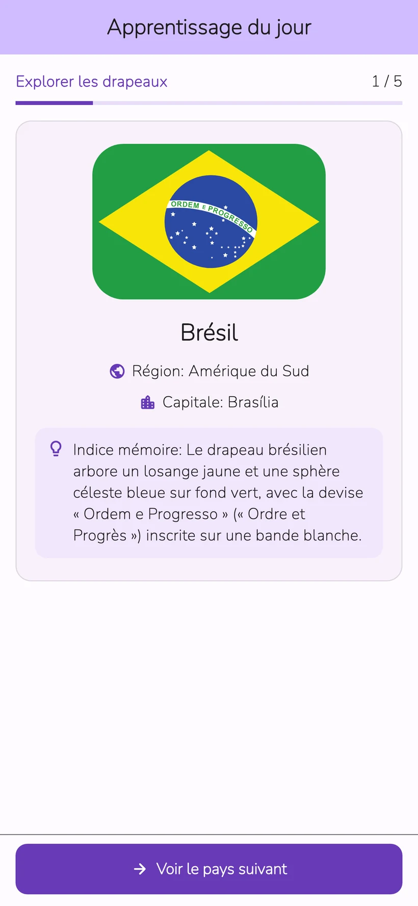
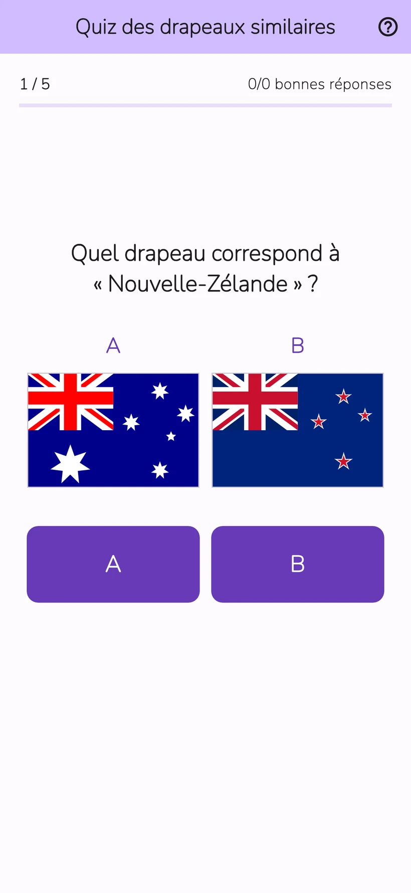
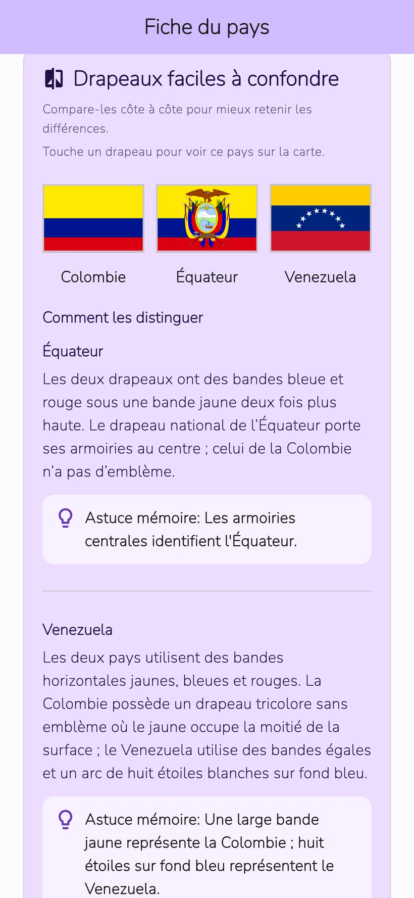
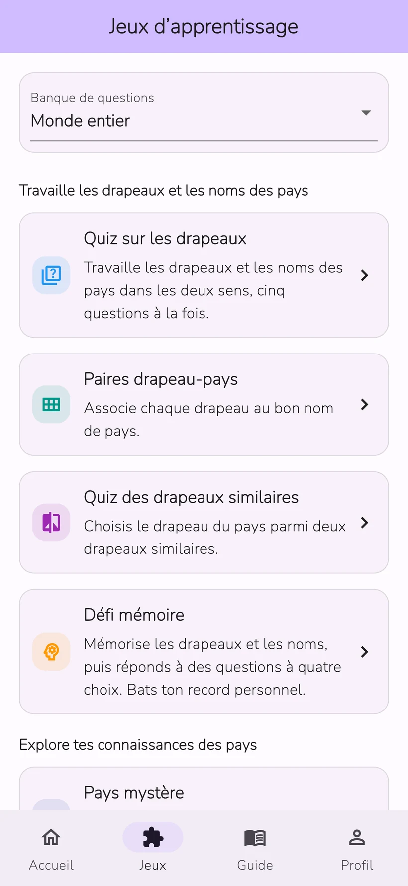

01
Quiz de drapeaux
Choisis le pays d’un drapeau ou le drapeau d’un pays.
Quiz de drapeaux : Awa Pop
Étudie les drapeaux et capitales de 206 pays et territoires.
Teste tes connaissances avec des leçons quotidiennes et huit jeux.
iPhone et Android · Téléchargement gratuit avec achats intégrés


Écrans réels de l’app
Apprends les drapeaux et les noms des pays, puis teste tes connaissances avec un quiz. Les révisions suivent ton historique d’apprentissage.
L’écran de progression contient des données d’exemple. Les analyses détaillées sont disponibles avec Study Plus.
Compare les couleurs et les motifs pour repérer les différences. Essaie avec les drapeaux de la France et de l’Italie.
Exemple interactif conçu pour ce site afin de distinguer les drapeaux. Sa présentation diffère de celle de l’app.
Entraîne-toi sur les drapeaux, les noms de pays, les monuments et les pays voisins. Choisis un jeu selon le sujet que tu veux étudier.
Choisis le pays d’un drapeau ou le drapeau d’un pays.
Relie chaque drapeau au nom de son pays.
Choisis le bon drapeau parmi deux dessins similaires.
Mémorise les drapeaux et les pays, puis réponds aux questions à choix multiples.
Identifie le pays à mesure que les indices apparaissent.
Identifie les pays grâce aux monuments et au patrimoine naturel.
Compare la population, la superficie et d’autres données de deux pays.
Choisis les pays qui partagent une frontière terrestre.


Drapeaux, capitales, cartes, origines et culture de 206 pays et territoires. Un pays t’intrigue dans un quiz ? Poursuis la découverte sur sa fiche.
Découvre la culture et les recommandations des pays et territoires des participants. Les publications sont traduites et vérifiées avant de paraître dans les langues de l’app.
Le pseudo est facultatif. Tu peux signaler ou masquer les publications. Les vidéos YouTube s’ouvrent hors de l’app.
Apprentissage quotidien
Une vidéo avec récompense disponible ajoute 3 utilisations à la catégorie choisie pour la journée. Rouvrir un pays le même jour ne consomme pas d’utilisation supplémentaire.
Utilisation illimitée sans publicité
Abonnements mensuel et annuel à renouvellement automatique
L’offre mensuelle comprend 1 mois d’essai gratuit pour les utilisateurs éligibles. L’offre annuelle ne comprend pas d’essai gratuit.
Consulte le prix, les conditions de l’essai, le tarif après l’essai et la période de renouvellement sur l’écran d’achat de l’app.
L’app est disponible en 10 langues : japonais, anglais, espagnol, allemand, coréen, thaï, indonésien, français, portugais du Brésil et chinois traditionnel de Taïwan.
La séance du jour et les révisions habituelles sont gratuites. Tu peux consulter les fiches de 3 pays différents et lancer 3 parties au total par jour dans l’onglet Jeux. Une vidéo avec récompense disponible ajoute 3 utilisations à la catégorie choisie pour la journée.
L’offre mensuelle comprend 1 mois d’essai gratuit pour les utilisateurs éligibles. L’offre annuelle ne comprend pas d’essai gratuit. Consulte les tarifs et les conditions sur l’écran d’achat de l’app.
Aucune inscription ni connexion n’est nécessaire. Tu peux envoyer des récits sur les pays et des commentaires depuis l’application.
Les données d’apprentissage sont enregistrées sur ton appareil. Elles ne se synchronisent pas automatiquement avec d’autres appareils. La restauration des achats et le transfert de l’historique d’apprentissage sont deux fonctions distinctes.
Toute personne curieuse des drapeaux et de la géographie peut apprendre à son rythme. L’app comprend des publicités, des achats facultatifs, des publications et des liens externes. Pour les jeunes enfants, un accompagnement par un adulte est conseillé.
L’envoi nécessite d’accepter les règles de publication, la traduction et la diffusion. Les publications paraissent après traduction et vérification. Le pseudo est facultatif. Tu peux supprimer tes publications, signaler des contenus et masquer des publications.
Essaie les leçons quotidiennes et les huit jeux dans l’application.
iPhone et Android · Téléchargement gratuit avec achats intégrés